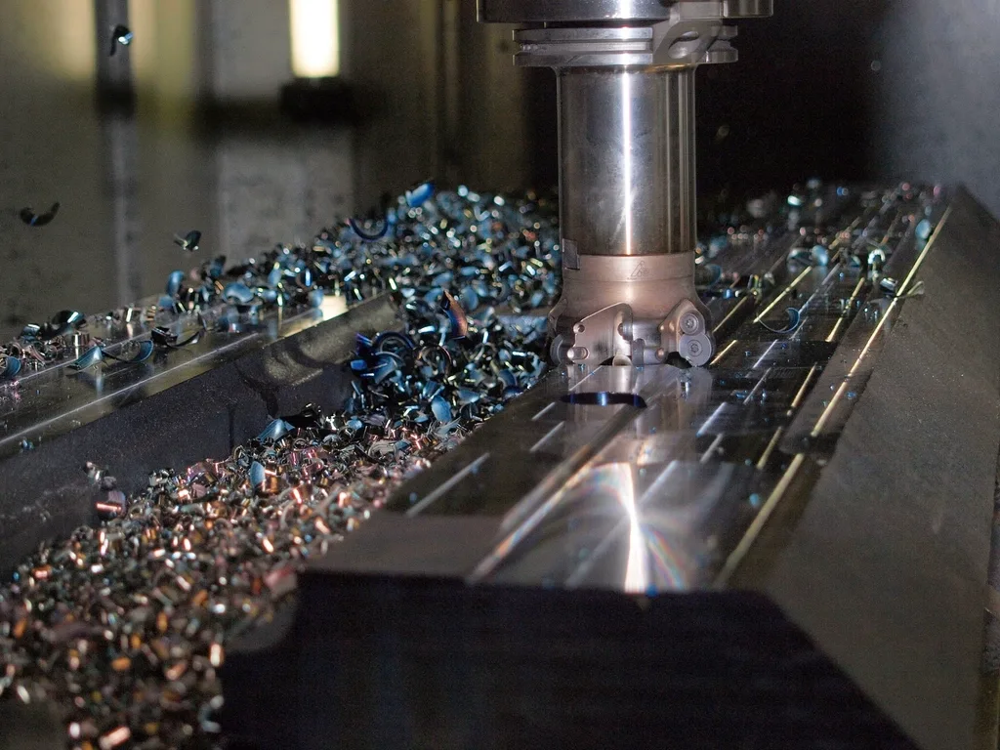

- Úvod
- Stroje a kvalita
Stroje a kvalita
Dvanáct CNC strojů, nejstarší z roku 2016. Výroba jede na dvě směny a novou zakázku obvykle zařadíme do tří týdnů.

Strojový park
Stroje průběžně obnovujeme. Programy připravujeme v CAM a dolaďujeme přímo u stroje, takže první kus bývá hotový týž den.
| Stroj | Na co ho používáme | Pracovní rozsah | Počet |
|---|---|---|---|
| Soustružnické centrum s osou C a Y | složité rotační díly na jedno upnutí | Ø 320 × 600 mm | 3 |
| Soustruh s tyčovým podavačem | série malých dílů z tyče | Ø 65 × 250 mm | 2 |
| Pětiosé frézovací centrum | tvarové díly a přípravky | Ø 500 × 380 mm | 2 |
| Vertikální frézovací centrum | desky, skříně a obrábění svařenců | 1 020 × 560 × 510 mm | 4 |
| Hrotová bruska | vnější i vnitřní broušení | Ø 200 × 650 mm | 1 |
| Svařovací pracoviště | MIG/MAG a TIG, polohovadlo | svařence do 1 000 mm | 3 |
| 3D souřadnicový měřicí stroj | kontrola prvních kusů a sérií | 700 × 1 000 × 600 mm | 1 |
Jak hlídáme kvalitu
Systém kvality máme certifikovaný podle ISO 9001 od roku 2008. V praxi to znamená čtyři kontroly, než díl odjede k vám.
Vstupní kontrola
Materiál přijmeme jen s atestem 3.1 podle EN 10204 a označíme ho číslem tavby.
První kus
Na měřicím stroji změříme všechny kóty z výkresu. Sérii pustíme až potom.
Během výroby
Obsluha měří podle kontrolního plánu, kritické rozměry zapisuje do protokolu.
Výstupní kontrola
Před balením zkontrolujeme vzhled, počet a označení. Protokol přiložíme na přání.
Klimatizovaná měrovna
Stálých 20 °C, souřadnicový měřicí stroj, výškoměr, kalibry a drsnoměr. Měřidla kalibrujeme každý rok.
140 vadných dílů z milionu
Tolik reklamací jsme řešili v roce 2025. Každou rozebereme s technologem a upravíme postup.
Dokumentace k dodávce
Atest materiálu, měřicí protokol, prohlášení o shodě a na přání PPAP pro automobilový průmysl.
Pošlete výkres k nacenění
Kromě rozměru posoudíme tolerance, materiál i počet kusů. Když díl neuděláme my, doporučíme, kdo ho udělá.